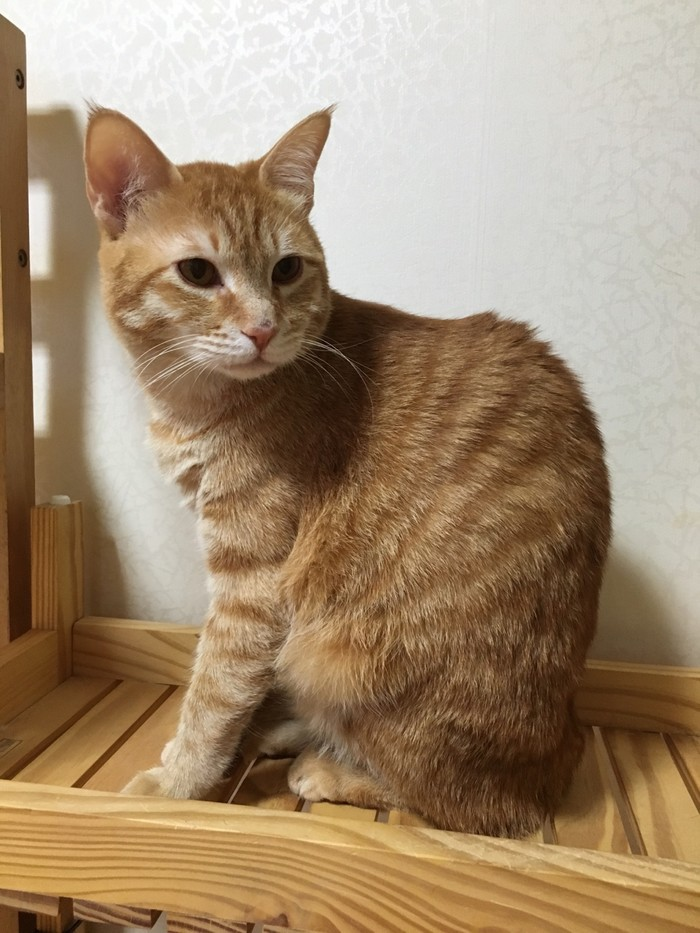

♡"고사모"♡
회원가입
나는 고양이 반려인이 될만한 자격이 있나?
입양전 반려인 자격 자가 TEST 목록한 달 평균 13만3000원 지출할 수 있는 경제적 여유가 있나?
가족구성원 모두가 고양이 입양에 동의하는가?
본인 소유의 집이 아닌 경우 현재 살고 있는 곳에서 고양이를 키울 수 있나?
옷,가구,집안 곳곳에 고양이 털이 날려도 괜찮은가
장모는 하루 한 번, 단모는 일주일에 한번 빗질을 해 줄 수 있는가?
다양한 종류의 스크래처를 구비해 고양이의 본능을 해소시켜 줄 수 있는가?
매일 다른 장난감으로 하루 30분 '액티브하게' 놀아줄 수 있는가?
코리안 숏 헤어
(한국 고양이) 길에서도 흔히 볼 수 있는 한국의 토종 고양이 입니다
-
고등어태비

등색이 우리가 먹는 고등어가 가지고 있는 무늬와 비슷한 모양을 띄고 있어서 붙여진 이름입니다.
치즈태비

몸 전체가 치즈색 무늬로 되어 있으며 흰색이 섞여 있는 경우도 있습니다.
삼색이

일본에서 행운을 불러온다는 의미를 가지고 있습니다. 검정색,고동색,하양색이 섞여 있는 털 무늬를 가지고 있어서 삼색이라고 부릅니다. 삼색이는 신기하게도 여자 아이일 가능성이 높다고 합니다.
턱시도

흰 바탕에 검은 무늬를 가지고 있기때문에 마치 그 모습이 턱시도를 입은 것과 유사하여 턱시도라고 불여진 이름입니다.
치즈태비 고양이 웃긴 영상
그 중 개인적으로 제일 좋아하는 치즈태비 고양이 영상을 가지고 와보았습니다.
고양이 키울때 유의사항
- 예방 접종/심장 사상충
- 그루밍
- 추락사고
고양이들은 강아지와는 달리 외부활동을 많이 하지 않는 동물이기 때문에
예방이 크게 필요하지 않을 거라는 생각을 갖고 있는 분들도 많습니다.
하지만 , 여름이 되면 여름의 불청객 모기들이 어김 없이 찾아오고,
모기로 인해 심장사상충의 감염 위험이 있습니다.
심장사상충은 강아지에게만 국한 되는 것은 아닙니다!
그렇기 때문에 고양이도 심장사상충 예방이 필요합니다.
고양이들의 전면특허 그루밍 그루밍은 이물질을 제거하기 위해 혀에 침을 묻혀 온몸을 핥거나 이빨, 발톱으로 털을 다듬는 행동을 하는데 이것은 정서적 안정을 찾거나 자신의 흔적을 없애기 위해서라고 합니다! 그런데 이과정에서 죽은 털들을 괴장히 많이 삼킬수 있습니다. 보통 헤어볼이라는 것으로 몸에서 배출이 되게 되는데 , 그냥 그대로 두면 위장장애를 초래할 수 있습니다. 이를 예방하기 위해서는 매일매일 빗질을 해주시면 도움이 될것 같습니다.
고양이 키울 때 주의사항으로 꼭 말씀 드리고 싶은 부분입니다. 고양이들의 착지능력은 아주 우수합니다. 하지만 언제 어디서든 어떻게 떨어져도 안전하다는 소리는 절대 아닙니다. 뇌진탕이나. 장애물에 의해 상처가 날수있습니다. 주변의 위험한 물건들은 잘 정리해주세요.
- 사료
- 간식
- 식기 최소 2개(식수1,사료1)
- 화장실(1묘=1개)
- 화장실 모래
- 이동장
- 침대(쉬는공간)
- 담요
- 장난감
- 스크래쳐
- 캣타워
- 치약/칫솔
고양이 입양 준비물/필수품
그 외
참고로 길고양이의 생은 평균3년~5년 길에서 생활하는 아이들의 삶이 얼마나 고되고 힘든지 수명만 봐도 알 수 있다.
우리나라 양육 중인 고양이 종류
| 구분 | 코리안숏헤어 | 믹스묘 | 러시안블루 | 터키시앙고라 |
|---|---|---|---|---|
| 수컷 | 17.2% | 16.7% | 13.8% | 8.4% |
| 암컷 | 27.1% | 18.2% | 10.7% | 8.4% |
| 10~20대 | 26.5% | 12.8% | 12.8% | 6.0% |
| 아파트 | 17.8% | 16.3% | 13.4% | 9.4% |
| 단독주택 | 27.6% | 20.7% | 13.8% | 12.1% |